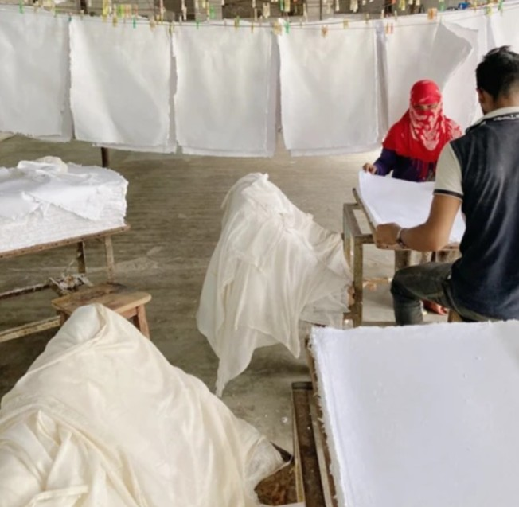

A5 journal · 100 pages · handmade paper from reclaimed cotton textile waste · Jaipur, India
Journals and paper goods for conferences, corporate gifting, and academic programs — made from fabric that would otherwise be thrown away.
Each journal is made from cotton offcuts and remnants that have already been through one production cycle. Instead of ending up in landfill, they become paper. Tell us how many journals your institution needs and see what that keeps out of the waste stream.
Textile production leaves behind enormous amounts of offcuts, remnants, and fibres. We redirect cotton waste into a new form: paper, made into journals designed for everyday use.
Cotton textile offcuts and remnants are collected from Jaipur's textile workshops.
Our papermakers turn the cotton waste into paper, working entirely by hand.
The sheets are cut and bound into A5 journals of 100 pages.
Ready-made or customised for your institution, event, or programme.

Every page was once fabric.
The weight and texture of cotton paper is something no mill-made sheet can match. It takes ink beautifully and ages well, and it carries the story of where it came from.
When you choose these journals for your institution, you are choosing a gift, a giveaway, or a notebook that starts a conversation about how materials are used.
To see our whole paper collection, email us or send an inquiry.
We take institutional and customised orders, from a few hundred journals to larger runs.
Delegate journals with a story attached, customised for your event and ready to hand out.
A gift that reflects your values, with the waste diverted from your order to report on.
Notebooks for students, faculty, and programmes that care where their materials come from.
Alongside paper, we work with Jaipur's textile traditions: Kantha and block print.
History, woven and stamped into cloth.
Kantha is a textile carrying stories from generations, a canvas that literalizes history, one hand-laid stitch at a time, passed from grandmother to daughter across seasons of quiet work.
Block printing is a meticulous master art form of rhythm, pressure, and living ink — a single motif pressed by hand, again and again, until the pattern breathes.
Layers of worn, gathered cloth are laid flat and stitched by hand in fine, running lines — the same technique women in Bengal have used for generations to turn old saris into something new. There is no pattern drawn beforehand; the maker's hand decides as she goes, so no two pieces of Kantha are ever quite the same.
A motif begins as a hand-carved wood block, sometimes decades old, passed between printers as an inheritance of skill. Dipped in natural, botanical dye and pressed onto cloth stamp by stamp, the pattern takes shape slowly, a discipline of rhythm and pressure that no machine has managed to replicate.
To see our whole textile collection, email us or send an inquiry.
Working entirely by hand, transforming reclaimed cotton waste into paper with a weight and texture no mill can replicate.
A family workshop carrying five generations of hand-block printing, working with wood blocks carved by their own hands and dyes drawn from indigo, madder, and turmeric.
A collective of women artisans who learned the running stitch from their mothers, and now pass it forward, turning reclaimed cloth into something entirely new.
Daffodil Studio began with a question: why do the things we own so rarely feel like they were made for us, with care, with time, with intention?
We found our answer in Jaipur, among artisans who measure their work in seasons, not shipments. What began as one question has become a small, devoted community of papermakers, printers, quilters, and weavers, each lending their hand to what we make together.
We work across circular materials, paper, and textile craft to create objects for people and organizations looking for something beyond the conventional. Every piece that reaches you carries all of our hands, not just one.
"You are special and the materials you surround yourself with should be special too."
Daffodil Studio partners with institutions, conferences, universities, boutiques, and design-led companies, from ready collections to fully custom commissions.
Tell us what you need and how many. We'll come back with options, pricing, and the amount of textile waste your order will divert.